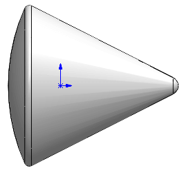
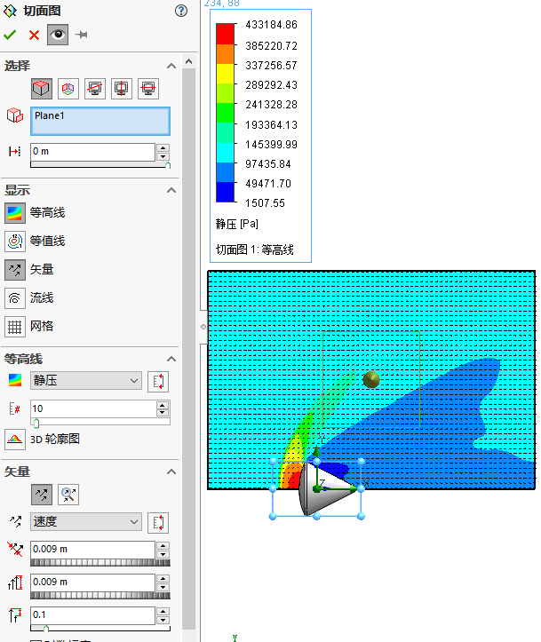

超声速流动
当流动的速度快于声速时， 就认为流动是超声速的。 在亚声速流动中， 流体会对扰动作出反应，
因为压差在扰动处开始发展并向下游传播， 致使来流在扰动的作用下做出反应和变化。 然而在超声速
流动中， 这些压差不会在上游发展， 因为流体流动的速度实在太快了。 因此， 下游的扰动不会受到来
流影响。 当流体流经扰动区时， 流动属性将发生剧烈变化， 这也是众所周知的激波。
案例分析
在边缘处产生超声速流动（激波）
创建项目
利用向导创建流体分析项目

项目名称

单位系统

分析类型
默认流体类型，勾选【 高马赫数流动】 复选框
壁面条件

初始条件
对这个分析来说，我们可以按默认定义进行
计算域
计算域可以压缩为圆锥体的 1 / 4， 以降低求解的规模并缩短求解的时间
计算控制选项
目标
方程式
1 | {GG 力 (X) 1}*4/1.7^2/1.399*2/101325/3.14159*4/0.1^2 |
计算
目标图
总结
本章研究了通过圆锥体的超声速流动， 使用了对称的条件来简化分析。 此外， 还使用了自动网格
细化技术来确保高质量的结果， 仿真的结果中捕捉到了正激波和斜激波， 最后还使用了切面图进行结果分析。
激波
在前面提到过， 当流动属性由于扰动的存在而发生强烈变化时就会出现激波。 可以看到， 在这个
例子中出现的激波包含两个部分。 第一， 在垂直于流动的方向存在一个弓形激波， 弓形激波的存在会
极大地增加物体的阻力。 第二， 沿着圆锥体的边界可以看到斜激波的传播， 因为流动是沿边界行进的。
由于超声速流动突然遇到一个凸角， 将在斜激波之后进一步加速流动的区域看到膨胀波的膨胀扇区（ 通
常称为 Prandtl-Meyer 膨胀扇区） ， 还会观察到穿过实体的亚声速尾流区， 如图 13-5 所示